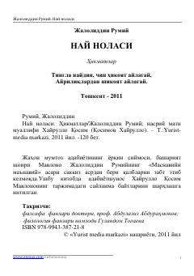

NNJaloliddin Rumiyning hikmatli baytlari va ularning ma'naviy sharhlari jamlangan asar.
Ushbu kitob buyuk mutafakkir Jaloliddin Rumiyning «Masnaviyi ma'naviy» asaridan saralangan baytlar va ularning nasriy sharhlaridan iborat. Adabiyotshunos Xayrullo Qosim tomonidan tayyorlangan ushbu to'plam insoniy kamolot, axloq va ilohiy muhabbat mavzularini qamrab oladi.